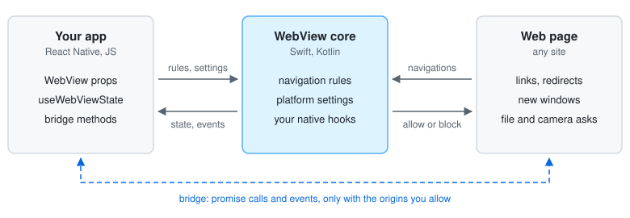

A React Native WebView that hands you the iOS and Android WebView APIs, instead of wrapping each one in a prop.
It runs on iOS and Android, on the new architecture, as an Expo module.
API reference · Examples · Native hooks · Migrating from react-native-webview · Extensions · MIT license

react-native-webview wraps each platform API in a prop of its own. When one isn't wrapped, you wait for an upstream PR, or patch or fork the package, even if the change is one platform call.
This package passes the platform APIs through instead:
ios and android props: any setting, by its platform name.get and call: properties and methods, by name.WKWebView or WebView itself, in your own Swift or Kotlin
module.<WebView
ios={{ scrollView: { bounces: false } }}
android={{ settings: { textZoom: 120 } }}
…
/>;
await ref.current?.call('webView.clearCache', [true]); // Android
A thin core keeps up with the platforms. A setting or method a new SDK adds works without a release of this package.
The core adds only what the platform APIs lack:
| react-native-webview | react-native-minimal-webview | |
|---|---|---|
| Navigation decisions | onShouldStartLoadWithRequest, a JS round trip each |
navigationRules, matched natively |
| Page messaging | postMessage strings, any page |
Typed promise bridge, allowedOrigins only |
| Navigation state | Tracked by you | useWebViewState(ref) |
| Page camera and microphone | Android grants them itself | Your app answers onPermissionRequest |
The migration guide covers each react-native-webview prop that works differently here.
npx expo install react-native-minimal-webview
Then rebuild the app (npx expo run:ios, npx expo run:android).
A bare React Native app adds Expo modules first, then installs with its package manager:
npx install-expo-modules@latest
npm install react-native-minimal-webview # or: yarn add, pnpm add
| Platform | Minimum |
|---|---|
| iOS | 17.0 |
| Android | API 29: minSdkVersion 29, for example with expo-build-properties |
| Android System WebView | Some features need a newer one (which) |
| Expo SDK | 53 (React Native 0.79, React 19) |
| Architecture | New architecture only |
import { WebView } from 'react-native-minimal-webview';
export function Browser() {
return <WebView source={{ uri: 'https://example.com' }} style={{ flex: 1 }} />;
}
Then pick what you need:
| To | See |
|---|---|
| Show the URL, progress or a back button | Navigation state |
| Keep the WebView on your sites, open the rest externally | Navigation rules |
| Call the page from the app, and the app from the page | The bridge |
| Change a WebView setting | Platform settings |
| Share cookies with native requests | Cookies |
| Run a script on every page | Scripts |
| Load bundled HTML | Local files |
| Answer file pickers, permissions and downloads | Page requests |
Use the native WKWebView or WebView |
Native hooks |
Bring back basicAuthCredential, onScroll and other react-native-webview props |
@react-native-minimal-webview/extensions |
CONTRIBUTING.md has the setup, the checks and the on-device suites.